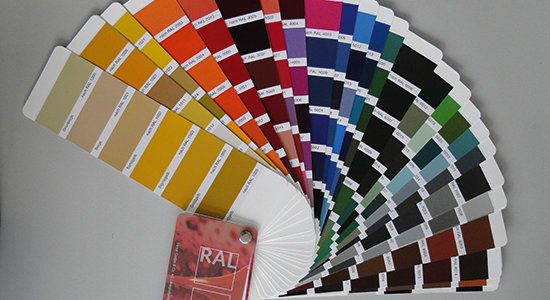
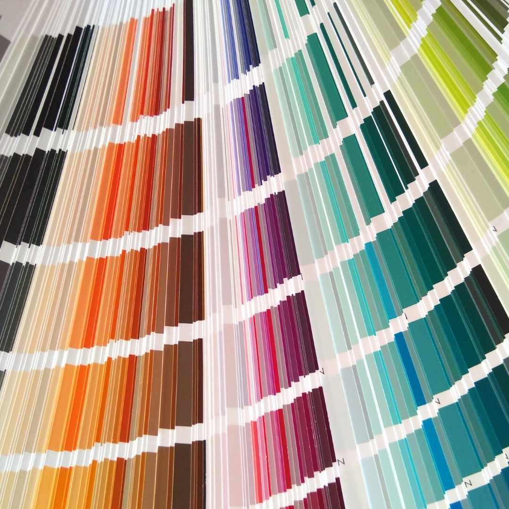

Material
Sie können entscheiden, mit welchen Materialien gearbeitet wird
Mineralische Farbe
- Umweltfreundlich & frei von schädlichen Chemikalien.
- Gesundheitsverträglich: Keine flüchtigen organischen Verbindungen (VOCs).
- Langlebigkeit: Verblassen und Vergilben wird minimiert.
- Diffusionsfähig: Reguliert Feuchtigkeit für ein gesundes Raumklima.
- Natürliches Aussehen: Mattes Finish für eine warme Atmosphäre.
- Vielseitig: In einer breiten Palette von Farbtönen erhältlich.
Isolierfarbe
- Isolierfarbe ist eine spezielle Farbe, die eine Reihe von Vorteilen bietet:
- Isolierfähigkeit: Die Farbe bildet eine schützende Barriere, die hilft, Wärme und Kälte zu isolieren.
- Energieeffizienz: Durch die Isolierwirkung trägt die Farbe zur Reduzierung des Energieverbrauchs bei, da weniger Heiz- oder Kühlenergie benötigt wird.
- Schimmelresistenz: Isolierfarbe kann dazu beitragen, das Wachstum von Schimmel und Pilzen zu hemmen, indem sie Feuchtigkeit fernhält.
- Verbesserte Luftqualität: Durch die Verminderung von Feuchtigkeit und Schimmelbildung trägt die Farbe zu einer gesünderen Raumluft bei.
- Langlebigkeit: Isolierfarben sind oft besonders strapazierfähig und beständig gegenüber Feuchtigkeit, Abrieb und Verschmutzung.
- Vielseitigkeit: Isolierfarben sind in einer Vielzahl von Farbtönen erhältlich und können auf verschiedenen Oberflächen wie Wänden, Decken und Fassaden verwendet werden.
Holzfarbe
- Holzfarbe ist eine spezielle Art von Farbe, die speziell für die Verwendung auf Holzoberflächen entwickelt wurde. Hier sind einige ihrer Merkmale:
- Schutz: Holzfarbe bietet einen wirksamen Schutz für Holzoberflächen vor den Elementen, wie z.B. Feuchtigkeit, UV-Strahlung und Schmutz.
- Haltbarkeit: Die Farbe ist langlebig und sorgt für eine langanhaltende Schönheit und Schutz für Ihr Holz.
- Farbauswahl: Holzfarben sind in einer Vielzahl von Farben erhältlich, um Ihren individuellen Geschmack und Stil zu treffen.
- Atmungsaktivität: Hochwertige Holzfarben ermöglichen eine gewisse Atmungsaktivität des Holzes, was wichtig ist, um Feuchtigkeitsansammlungen zu vermeiden und die Lebensdauer des Holzes zu verlängern.
- Einfache Anwendung: Einfach und gleichmäßig auftragen, um eine professionelle Oberfläche zu erzielen.
- Umweltfreundlichkeit: Viele Holzfarben sind umweltfreundlich und enthalten wenig oder keine schädlichen Chemikalien, was sie ideal für den Einsatz in Innenräumen macht.


- Da es eine Vielfalt von Farben gibt und es unter natürlichem Licht besser zu beurteilen ist, berate ich Sie gerne vor Ort Ihren Wünschen entsprechend.
Alle weiteren Materialien auf Anfrage